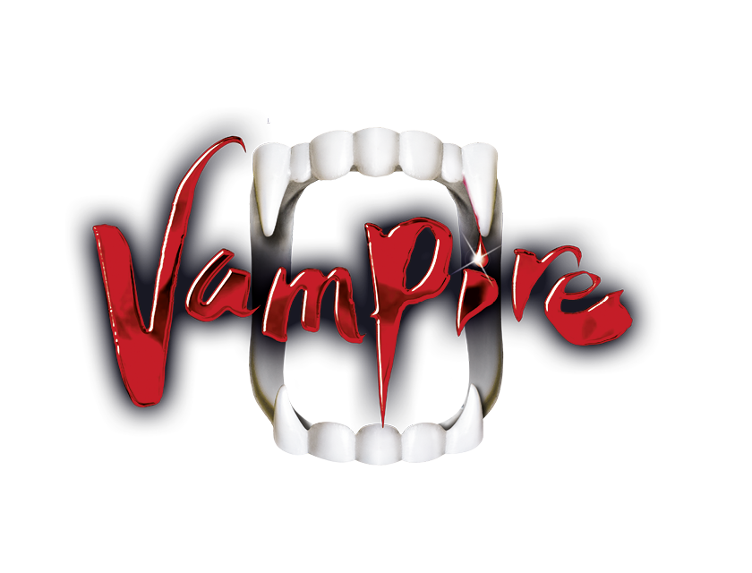

DANCE OF THE VAMPIRES - The VBW cult musical
According to director Roman Polanski, he initially thought the idea of turning his film classic into a musical was crazy. However, he quickly realized that the film, with its unique characters and dialogue, could provide a good basis for a musical adaptation. Roman Polanski found Michael Kunze's (book) dramaturgical reorientation of the piece convincing and Jim Steinman's (music) powerful rock compositions inspired him. After an intensive development and rehearsal period, the time had finally come: on October 4, 1997, the curtain went up for the first time on DANCE OF THE VAMPIRES in Polanski's direction at the Raimund Theater in Vienna.


SYNOPSIS
Together with his shy assistant Alfred, the renowned vampire researcher and eccentric scientist Professor Abronsius from Königsberg sets off on a journey to distant Transylvania. The aim of the unlikely pair is to find - and kill - the vampires who, according to legend, live in a mysterious castle here. They find shelter in the freezing cold night in a run-down inn owned by the untrusting Chagall and his wife Rebecca. Here Alfred falls in love with the innkeeper's daughter Sarah, who is soon lured to his castle by the sinister but also extremely charismatic Count von Krolock and invited to a grand ball. As Alfred and the Professor try to rescue Sarah, they themselves end up in the castle, where they are already welcomed by the Count. Events escalate at the big midnight ball, but in the end they both manage to free Sarah - but not without a surprising twist.
Eternity begins tonight!
Since its world premiere, the play has become an international cult musical and continues to thrill audiences all over the world. From Vienna, the vampires have conquered Belgium, the Czech Republic, Denmark, Estonia, Finland, France, Germany (Berlin, Cologne, Hamburg, Munich, Oberhausen, Stuttgart), Hungary, Japan, Poland, Russia, Slovakia, Switzerland and the USA. Over ten million people in 15 countries and translated into 13 languages have seen DANCE OF THE VAMPIRE worldwide.